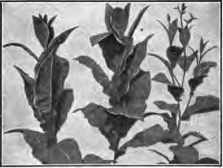
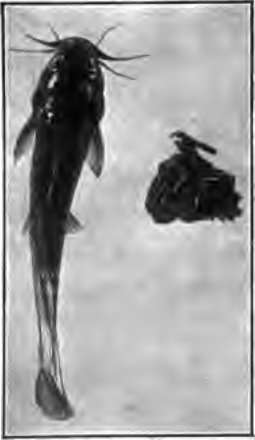
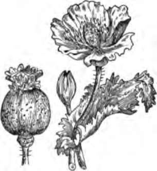

Chapter VIII. Tobacco And Other Narcotics And Their Effect On Health
Description
This section is from the book "The Human Body And Health", by Alvin Davison. Also available from Amazon: The Human Body and Health.
Chapter VIII. Tobacco And Other Narcotics And Their Effect On Health
Nature Of Narcotics
A narcotic is that which when taken into the body tends to deaden pain, produce sleepiness, and make some of the organs act more slowly. Alcohol, tobacco, laudanum and many patent medicines are common narcotics.
In the beginning, the taste of narcotics is often unpleasant, and may make the user sick. By daily use his system becomes accustomed to the poison until he is compelled to take large quantities to satisfy the unnatural appetite.
How Tobacco Is Made
Tobacco is the dried and cured leaves of a plant growing to the height of three or four feet. The states raising the largest amount of tobacco are Kentucky, North Carolina, Virginia, Tennessee and Ohio.
Chewing tobacco is made by pressing the leaves into the form of blocks which are cut into fine shreds. In the manufacture of cigars, some of the leaves are formed into a roll and then a piece of a large leaf is wrapped around it.
Fig. 45. Tobacco plants.
A cigarette is a small roll of tobacco usually held together by a paper wrapper. Some smokers make their own cigarettes from fine-cut tobacco.
Poison From Tobacco
Many persons after the age of twenty years use tobacco all their lives and seem not to be harmed by it. It is likely, however, that in numerous cases some of the organs are prevented from doing their best work. In the young who use much tobacco, certain organs are seriously weakened by the poison. This poison is nicotine.
If a pipeful of tobacco be boiled in a cup of water much of the poison will be drawn out into the water. If this poisoned water is then put into a quart jar of water containing a small fish, it will kill the fish in less than a half hour.
Fig. 46. This fish was killed in twenty-five minutes by the poison soaked out of the bunch of tobacco at the right and placed in- an aquarium with the fish.
Harm In Smoking
Some people think they can smoke without any bad results, because they believe the burning of the tobacco will destroy the poison. This is not true. The nicotine is drawn into the mouth with the smoke, and is then absorbed into the blood. The burning of the tobacco also gives rise to another poison.
The smoking of cigars, or of tobacco in a pipe, is less harmful than using cigarettes. The smoking of tobacco, in any form by young persons, prevents proper growth, by making the cells act too slowly, and thus neglect doing their whole duty. It lessens the sense of taste, sometimes causes a poor appetite, and in other ways has an unwholesome effect on the organs of digestion. Some schools, realizing how the health may be injured by tobacco, have absolutely prohibited its use among their pupils.
Cigarettes
The cigarette habit is dangerous to young people. The small cost of a single smoke and the mildness of the tobacco tempt boys to form a habit which very few are strong enough to break away from, even when they learn it will gradually weaken the body. Serious sickness, insanity and death have resulted from excessive cigarette smoking. It is so harmful to boys that many business men will not employ those accustomed to use cigarettes.
It is the duty of states to make such laws as will protect health and prevent crime. Some states have, therefore, passed laws preventing the sale and manufacture of cigarettes within their borders. Since 1896, when people learned the danger from the use of cigarettes, the number manufactured in the United States has decreased about one half.
The Chewing Of Tobacco
The chewing of tobacco is an uncleanly habit, as well as injurious to health. It causes a great waste of saliva which is much needed to act on the food. Using tobacco in this way permits so much poison to enter the system that it sometimes affects the heart.
To get rid of some of the poison, the tobacco chewer must constantly indulge in the unclean habit of spitting. This makes him disagreeable to others and prevents him from securing employment with many business houses.
Snuff
Snuff is tobacco ground into a fine powder to which other materials are sometimes added. Snuff using was a common habit among both men and women a hundred years ago, but it has long been out of style. The snuff was drawn up the nose so as to affect the delicate nerve endings, and cause the person to sneeze. Snuff tends to cause soreness in the nose and throat.
Use Of Opium
Opium is much used in medicine to produce sleep, numb pain, and quiet the organs of the body. Opium forms the most important part of paregoric, laudanum and most soothing sirups. Morphine is a strong form of opium. Opium and morphine are dangerous drugs, and should not be used, except by the advice of a physician.
In China, and in some other countries, opium is smoked and also eaten by persons who have acquired the habit, and are unable to stop it. In this way it has ruined the body, mind and character of thousands of people. Laws have been made to stop its use in some countries. Japan no longer allows it to be sold, except for medicine.
Fig. 47. The opium plant.
Opium
Opium, like tobacco, is used by thousands of people for the pleasant effect it produces. The drug is made from the white poppy, grown in Asia Minor, Egypt, India, Persia and China. By cutting gashes in the head of the poppy, a fluid is made to run out and form a gummy substance. From this the pure opium is secured.
Danger In Using Drugs
No one can form the habit of using opium or morphine, without making himself miserable, and injuring his health very much. The use of these drugs regularly, for only one month, will, in many cases, fix the habit so firmly on a person that he cannot stop it without help. Nearly one million persons are suffering from the opium or morphine habit in the United States.
The many advertisements in newspapers and magazines, offering to cure the opium or morphine habit, are by dishonest persons who rob drug victims of thousands of dollars yearly. A physician at home should be asked to direct the cure of the patient. Cocaine is another dangerous drug, which should not be used except by the advice of a physician.
How The Drug Habit Is Brought On
No one expects to become a slave to any drug when he begins using it. Some persons take a drug to make them sleep, and others to soothe pain or help a headache. The dose, from week to week, must be constantly increased to produce the desired effect, because the system becomes accustomed to the poison. Before the user is aware of it, the terrible drug habit fixes itself on him, and he finds himself in a nervous state of unrest, which nothing helps except another dose of the drug.
Laudanum, Paregoric And Soothing Sirups
Many people have acquired the drug habit by using laudanum, which contains much opium. Paregoric is a mixture of alcohol and other drugs, with a small amount of opium. Soothing sirups wrongly given to babies, to stop them from crying and produce sleep, contain some form of opium.
Cough medicines very often have in them opium, morphine or chloroform. None of these drugs should be used, as they weaken the body and injure the health, and are likely to cause a false appetite leading the victim to ruin.
Patent Medicines
A patent medicine is a drug mixture which is advertised to cure one or several diseases, and whose contents are supposed to be unknown to all except the manufacturer. A reliable physician knows the value of all drugs used in patent medicines, and can select the one which is best suited to help each special ailment.
Many patent medicines are advertised to cure consumption. None of them, except codliver oil preparations, help the disease, and most of them make it worse. The few who say that patent medicines have helped them are likely mistaken, as most sick persons get well without medicine.
Danger In Using Patent Medicines
Every year the people of our country pay $75,000,000 for patent medicines. Some of them make persons drunkards, some make their users slaves to the opium habit, and others cause death. Nearly all liquid patent medicines contain alcohol. The advertised cures for cold, coughs and consumption often contain chloroform, morphine, strychnine and other poisons. Cocaine is generally present in remedies offered to cure catarrh. Headache powders have caused a number of sudden deaths, due to a powerful drug weakening the action of the heart. It is wise to take no medicine, except by the advice of a physician.
Practical Questions
1. Name some narcotics. 2. Tell how tobacco is made. 3. What is the poison in tobacco? 4. How does smoking tobacco harm the young? 5. Why is the smoking of cigarettes especially harmful? 6. Why should tobacco not be chewed? 7. How is opium secured? 8. What is morphine? 9. What is the danger in using drugs? 10. How is the drug habit caused? 11. Why should you not use paregoric or soothing sirup? 12. What is a patent medicine? 13. Why is it wrong to use patent medicines? 14. Can a patent medicine cure consumption? 15. How much is spent yearly for patent medicines?
Suggestions For The Teacher
A very interesting experiment showing the poison in tobacco, may be performed as follows: Secure the stump of a cigar or any small piece of tobacco and boil it five minutes in a little water. Pour this water into a quart or half-gallon jar of water containing a fish, tadpole or any other water-breathing animal and note how soon the creature goes to sleep and then dies.
Continue to:
- prev: Drink And Health. Continued
- Table of Contents
- next: Chapter IX. The Blood And Its Passage Through The Body